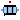

SpacePhasor connector and PartialMachines
This package contains partial models for quasi-static transformer and space phasor models.
Extends from Modelica.Icons.InterfacesPackage (Icon for packages containing interfaces).
| Name | Description |
|---|---|
|  PartialBasicTransformer | Partial model of three-phase transformer |
Partial model of three-phase transformer
| turns ratio n | 1 | |
| nominal frequency fNominal | 50 | Hz |
| nominal voltage per phase | 100 | V RMS |
| nominal current per phase | 100 | A RMS |
| nominal apparent power | 30 | kVA |
| primary resistance R1 | 0.005 | Ohm per phase at reference temperature |
| reference temperature T1Ref | 20 | °C |
| temperature coefficient alpha20_1 | 0 | 1/K |
| primary stray inductance L1sigma | 78E-6 | H per phase |
| secondary resistance R2 | 0.005 | Ohm per phase at reference temperature |
| reference temperature T2Ref | 20 | °C |
| temperature coefficient alpha20_2 | 0 | 1/K |
| secondary stray inductance L2sigma | 78E-6 | H per phase |
| operational temperature T1Operational | 20 | °C |
| operational temperature T2Operational | 20 | °C |
| These values give the operational parameters: | ||
| nominal voltage drop | 0.05 | p.u. |
| nominal copper losses | 300 | W |
Extends from Modelica.Electrical.Machines.Icons.QuasiStaticTransformer.
| Name | Description |
|---|---|
| n | Ratio primary voltage (line-to-line) / secondary voltage (line-to-line) |
| useThermalPort | Enable / disable (=fixed temperatures) thermal port |
| Operational temperatures | |
| T1Operational | Operational temperature of primary resistance [K] |
| T2Operational | Operational temperature of secondary resistance [K] |
| Nominal resistances and inductances | |
| R1 | Primary resistance per phase at TRef [Ohm] |
| T1Ref | Reference temperature of primary resistance [K] |
| alpha20_1 | Temperature coefficient of primary resistance at 20 degC [1/K] |
| L1sigma | Primary stray inductance per phase [H] |
| R2 | Secondary resistance per phase at TRef [Ohm] |
| T2Ref | Reference temperature of secondary resistance [K] |
| alpha20_2 | Temperature coefficient of secondary resistance at 20 degC [1/K] |
| L2sigma | Secondary stray inductance per phase [H] |
| Name | Description |
|---|---|
| plug1 | Primary plug |
| plug2 | Secondary plug |
| thermalPort |